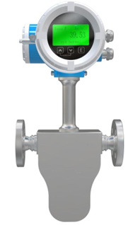
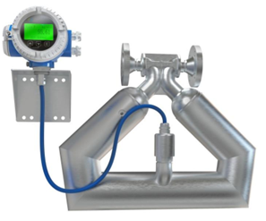
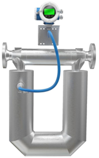

Модели криогенного исполнения L предназначены для работы с криогенными жидкостями при экстремально низких температурах. Рабочая среда от −200 °C до +150 °C. Только для трубок типов U и Δ. Высокая чувствительность при малых расходах жидкого азота, кислорода, метана и других криогенных сред. Компактная конструкция с увеличенным сроком службы.
Исполнение L разработано специально для измерения расхода криогенных жидкостей в условиях экстремально низких температур. Специальные материалы, конструктивные решения и криогенная изоляция обеспечивают стабильную работу при температурах от −200 °C до +150 °C. Высокая чувствительность при малых расходах делает исполнение L идеальным выбором для точного дозирования и учёта сжиженных газов.
Внешний вид моделей криогенного исполнения L с U-образными и Δ-образными трубками



Основные параметры исполнения L для различных типоразмеров
| Типоразмер | Тип трубок | Диапазон температур среды | Рекомендуемые среды |
|---|---|---|---|
| DN08..L | U / Δ | −200 °C…+150 °C | Жидкий азот (LN₂), жидкий кислород (LO₂) |
| DN25..L | U / Δ | −200 °C…+150 °C | Жидкий азот, кислород, метан (LNG) |
| DN40..L | U / Δ | −200 °C…+150 °C | Сжиженный метан (LNG), жидкий азот |
| DN50..L | U / Δ | −200 °C…+150 °C | СПГ, жидкий кислород, криогенные смеси |
| DN80..L | U / Δ | −200 °C…+150 °C | СПГ, крупные потоки криогенных жидкостей |
* Указаны диапазоны температур среды на входе в расходомер. Конкретные параметры зависят от исполнения, материала уплотнений и типа присоединений. Уточняйте при заказе в зависимости от условий эксплуатации и типа криогенной среды.
Исполнение L оптимально для следующих отраслей промышленности
Учёт СПГ, сжиженного метана и криогенных газов на объектах добычи, переработки и транспортировки
Дозирование и учёт жидкого азота, кислорода и других криогенных реагентов в химических процессах
Контроль расхода криогенного топлива, СПГ в энергоустановках и системах газоснабжения
Исполнение L доступно с двумя типами трубок — U и Δ
Классическая конфигурация с широким U-образным изгибом. Обеспечивает максимальную чувствительность при малых расходах криогенных жидкостей. Рекомендуется для DN08 и DN25.
Дельта-образная конфигурация трубок с улучшенной жёсткостью и устойчивостью к тепловым деформациям. Рекомендуется для DN40, DN50 и DN80 при больших расходах криогенных сред.
Вернуться к основному каталогу продукции Mass-EXPERT